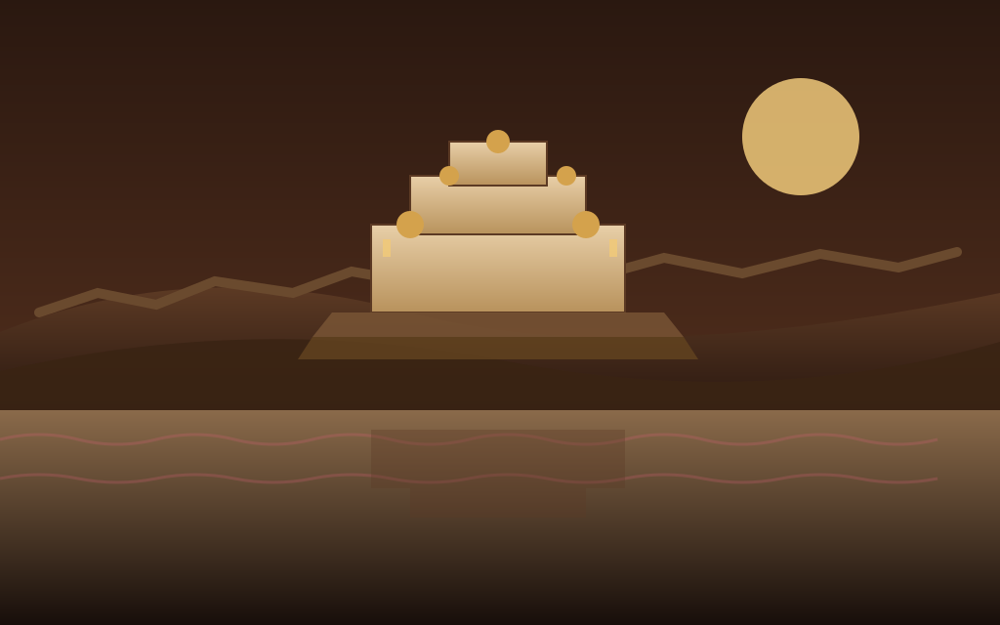
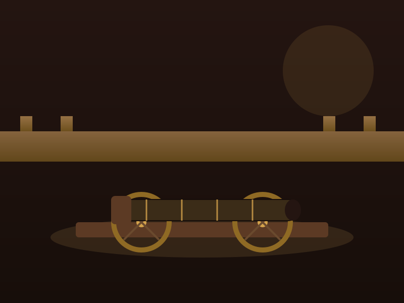
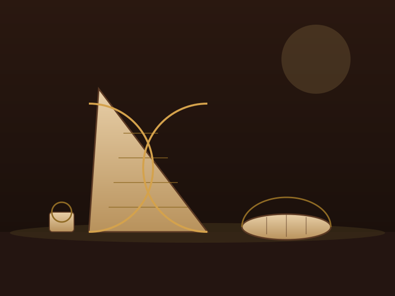
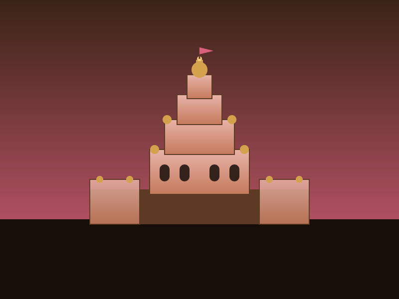

Kachwaha Dynasty Explorer
Follow the Suryavanshi Rajputs of Amber from a hill fort above Maota Lake to the planned pink city of Jaipur. Discover the dynasty that turned Mughal alliance into imperial power, and left behind Amber Fort, Jaigarh, and the observatories of a warrior-astronomer king.
From a Hill Fort at Dausa to the Kingdom of Amber
The Kachwahas are a Rajput clan that traces its descent to Kusha, a son of Lord Rama, and traditionally migrated from Ayodhya through Gwalior and Narwar before settling in Rajputana. In 1093 CE, the chieftain Dulha Rai founded the kingdom at Dausa, defeating the local Meena and Badgujar chieftains, before the seat of power moved to the hill fort of Amber overlooking Maota Lake.
For nearly five centuries the Kachwahas ruled Amber as one among many Rajput principalities of the Dhundhar region. Their fortunes changed decisively in the 16th century, when a pragmatic alliance with the rising Mughal Empire transformed a regional hill kingdom into one of the most influential courts in northern India.
🛡️ At a Glance
- 1093–1949 CE — Nearly nine centuries of Kachwaha rule over Amber and, later, Jaipur.
- Founder — Dulha Rai, who established the kingdom at Dausa.
- Capitals — Amber, then Jaipur (founded 1727) after Sawai Jai Singh II moved the seat of power.
- Clan Lineage — Suryavanshi Rajputs claiming descent from Kusha, son of Rama.
Major Rulers of the Kachwaha Line
From the founding chieftain to the astronomer-king who built Jaipur, and the last Maharaja who signed away sovereign rule.
Dulha Rai (r. from 1093)
Founding chieftain who established the kingdom at Dausa, defeating the Meena and Badgujar rulers of the region.
Raja Bharmal (1548–1574)
Became the first Rajput ruler to enter a matrimonial alliance with the Mughals in 1562, reshaping Amber's fortunes.
Raja Man Singh I (1589–1614)
A celebrated general under Akbar who expanded Amber's influence across the Mughal empire and rebuilt Amber Fort.
Mirza Raja Jai Singh I (1621–1667)
A powerful Mughal noble and military commander under Shah Jahan and Aurangzeb, honoured with the title "Mirza Raja".
Sawai Jai Singh II (1699–1743)
Founder of Jaipur in 1727, astronomer and mathematician who built the Jantar Mantar observatories in five cities.
Sawai Man Singh II (1922–1949)
The last ruling Maharaja of Jaipur, who signed the Instrument of Accession in 1947 and later served as Rajpramukh of Rajasthan.
🏯 Landmarks of the Dhundhar Region
- Amber Fort: A UNESCO World Heritage hill fort overlooking Maota Lake, famed for its mirrored Sheesh Mahal.
- Jaigarh Fort: Built in 1726 by Sawai Jai Singh II, home to the Jaivana cannon — the largest wheeled cannon ever cast.
- Nahargarh Fort: Raised in 1734 to complete a defensive ring around Jaipur alongside Amber and Jaigarh.
- City Palace & Jantar Mantar: The royal residence and UNESCO-listed observatory, both built in Jai Singh II's new capital.
Forts and Palaces of the Kachwahas
Amber Fort, begun under Raja Man Singh I and expanded by his successors, blends Rajput and Mughal architecture across courtyards, gardens, and the glittering Sheesh Mahal, whose walls are set with thousands of mirrored panels. Jaigarh Fort, perched on the ridge above, was built primarily as a military stronghold and cannon foundry, and still houses the Jaivana — cast in 1720 and considered the largest wheeled cannon in the world.
When Sawai Jai Singh II moved his capital to the newly planned city of Jaipur in 1727, he built the City Palace as his royal residence and commissioned the Jantar Mantar, the largest of five stone astronomical observatories he constructed across India. Together with Nahargarh Fort, these monuments turned the Kachwaha capital into one of India's most distinctive planned cities.
Chronology of the Kachwaha Dynasty
From a founding chieftain at Dausa to the end of nearly nine centuries of sovereign rule.
Founding at Dausa
Dulha Rai establishes the Kachwaha kingdom, defeating the Meena and Badgujar chieftains of the Dhundhar region.
Amber Becomes Capital
The seat of Kachwaha power shifts to the hill fort of Amber overlooking Maota Lake.
The Mughal Alliance
Raja Bharmal becomes the first Rajput ruler to enter a matrimonial alliance with Akbar, reshaping Amber's political fortunes.
Man Singh I's Ascendancy
As a leading Mughal general, Man Singh I expands Amber's reach and rebuilds Amber Fort in its present form.
Jaipur is Founded
Sawai Jai Singh II moves his capital from Amber to the newly planned city of Jaipur and begins the City Palace and Jantar Mantar.
End of Sovereign Rule
Sawai Man Singh II signs the Instrument of Accession in 1947; Jaipur merges into Rajasthan in 1949, ending nearly nine centuries of Kachwaha rule.
Forts, Cannon & Palaces of the Kachwahas
Illustrated impressions of the monuments the Kachwaha rulers left across Amber and Jaipur.




📚 References & Further Reading
- Sarkar, Jadunath (1984). A History of Jaipur, c. 1503–1938. Orient Longman.
- Sarkar, Jagadish Narayan (1984). The Life of Mirza Raja Jai Singh. Rajesh Publications.
- Tillotson, Giles (2006). Jaipur Nama: Tales from the Pink City. Penguin Books India.
- Archaeological Survey of India. World Heritage nomination: Hill Forts of Rajasthan (Amber Fort).
- UNESCO World Heritage Centre (2010). Jantar Mantar, Jaipur — World Heritage nomination dossier.